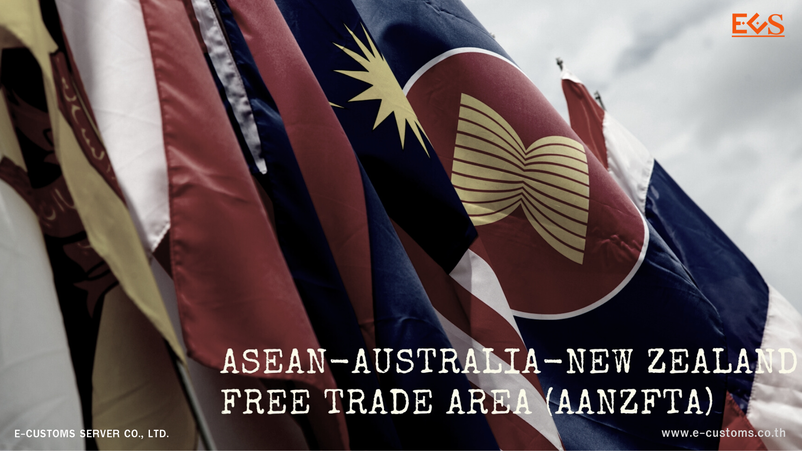

ความตกลงเขตการค้าเสรีอาเซียน-ออสเตรเลีย-นิวซีแลนด์ (ASEAN-Australia-New Zealand Free Trade Agreement - AANZFTA)
การเจรจาจัดทำความตกลง AANZFTA ถือกำเนิดขึ้นเมื่อผู้นำของประเทศสมาชิกอาเซียน ออสเตรเลีย และนิวซีแลนด์ ลงนามในแถลงการณ์ร่วมเมื่อวันที่ 30 พฤศจิกายน 2547 ตกลงให้เริ่มการเจรจาจัดทำความตกลงการค้าเสรีระหว่างกัน เพื่อส่งเสริมการรวมตัวทางเศรษฐกิจในภูมิภาค โดยก่อนหน้านี้ High-Level Task Forceของอาเซียนได้จัดทำการศึกษา (The Angkor Agenda: Report of the High-Level Task Force on the AFTA-CER Free Trade Area) ซึ่งมีข้อสรุปว่า การจัดทำเขตการค้าเสรีระหว่างอาเซียน กับออสเตรเลียและนิวซีแลนด์นั้นเป็นไปได้ และเป็นสิ่งที่ควรทำ เพื่อให้ทั้งสองฝ่าย สามารถก้าวทันการเปลี่ยนแปลงอันรวดเร็วของโลกปัจจุบัน จึงทำให้ความตกลงเขตการค้าเสรีอาเซียน-ออสเตรเลีย-นิวซีแลนด์ (ASEAN-Australia-New Zealand Free Trade Agreement - AANZFTA) มีผลใช้บังคับตั้งแต่วันที่ 12 มีนาคม 2553 เป็นต้นมา
การค้าสินค้า
- ออสเตรเลีย ได้ผูกพันลดภาษีศุลกากรครอบคลุมทุกรายการสินค้ารวม 6,124 รายการ
- นิวซีแลนด์ ได้ผูกพันลดภาษีศุลกากรครอบคลุมทุกรายการสินค้ารวม 7,238 รายการ
- ไทย ได้ผูกพันภาษีศุลกากรครอบคลุมสินค้าจำนวน 6,224 รายการ
โดยไทยจะไม่ผูกพันลดภาษีในสินค้าใดให้เป็นศูนย์เร็วกว่าที่ได้ผูกพันไว้ในความตกลง เขตการค้าเสรีอาเซียน (ASEAN Free Trade Area: AFTA) หรือความตกลงการค้าเสรีไทย - ออสเตรเลีย (TAFTA) หรือความตกลงเป็นหุ้นส่วนเศรษฐกิจของไทย-นิวซีแลนด์ (TNZCEP) ยกเว้นกรณีที่อัตราฐานที่ใช้ในการลด และ/หรือ การยกเลิกภาษีศุลกากรภายใต้ความตกลง AANZFTA คือ MFN Applied Rates ณ วันที่ 1 มกราคม 2548 ต่ำกว่าข้อผูกพันภาษีศุลกากรภายใต้ความตกลงที่มีอยู่เดิม หรือกรณีของสินค้าบางรายการที่ไม่มีมูลค่าการค้า กับออสเตรเลียและนิวซีแลนด์หรือมีมูลค่าการค้าต่ำ นอกจากนี้ไทยไม่ได้ผูกพันภาษีศุลกาการ สำหรับสินค้าที่มีโควตาภาษีทุกรายการด้วย
การลดหย่อนภาษี
ออสเตรเลีย
- สินค้าลดภาษีปกติ (Normal Track: NT) จำนวนร้อยละ 91.12 ของรายสินค้าทั้งหมด จะทยอยลดภาษีจนเป็นศูนย์ในปี 2553
- สินค้าอ่อนไหว (Sensitive Track-1: ST-1) จำนวนร้อยละ 5.17 ของรายสินค้าทั้งหมด จะทยอยลดภาษีจนเป็นศูนย์ในปี 2558
- สินค้าอ่อนไหวสูง (Sensitive Track-2: ST-2) จำนวนร้อยละ 3.71 ของรายสินค้าทั้งหมด จะทยอยลดภาษีจนเป็นศูนย์ในปี 2563
ตารางการลดภาษีของออสเตรเลียประกอบด้วย
▪ Head note
▪ Tariff Schedule
▪ PMV Tariffs for Thailand
▪ PMV Tariffs for Indonesia
▪ PMV Tariffs for Maiaysia
นิวซีแลนด์
- สินค้าลดภาษีปกติ (Normal Track: NT) จำนวนร้อยละ 90.02 ของรายสินค้าทั้งหมด จะทยอยลดภาษีจนเป็นศูนย์ในปี 2555
- สินค้าอ่อนไหว (Sensitive Track-1: ST-1) จำนวนร้อยละ 6.44 ของรายสินค้าทั้งหมด จะทยอยลดภาษีจนเป็นศูนย์ในปี 2560
- สินค้าอ่อนไหวสูง (Sensitive Track-2: ST-2) จำนวนร้อยละ 3.54 ของรายสินค้าทั้งหมด จะทยอยลดภาษีจนเป็นศูนย์ในปี 2563
ไทย
- สินค้าลดภาษีปกติ (Normal Track: NT) จำนวนร้อยละ 89.96 ของรายสินค้าทั้งหมด จะทยอยลดภาษีจนเป็นศูนย์ในปี 2556
- สินค้าอ่อนไหว (Sensitive Track-1: ST-1) จำนวนร้อยละ 7.41 ของรายสินค้าทั้งหมด จะทยอยลดภาษีจนเป็นศูนย์ในปี 2563
- สินค้าอ่อนไหวสูง (Sensitive Track-2: ST-2) คงภาษีไว้ถึงปี 2562 แล้วลดเป็นศูนย์ในปี 2563 หรือ คงภาษีเดิมไว้ตลอด
- สินค้าที่ไม่มีข้อผูกพันภาษีศุลกากร (Exclusion) จำนวนร้อยละ 1.07 ของรายการสินค้าทั้งหมด
(ตารางการลดภาษีของโทย)
การขอใช้สิทธิประโยชน์จากความตกลง AANZFTA
รับรองถิ่นกำเนิดสินค้าForm AANZ(ตัวอย่าง Form AANZ) ต่อหน่วยงานศุลกากรจองประเทศนำเข้า
ประกาศ / กฎหมาย ที่เกี่ยวข้อง
- ประกาศกระทรวงการคลัง เรื่อง การยกเว้นอากรและลดอัตราอากรศุลกากรสำหรับเขตการค้าเสรีอาเซียน - ออสเตรเลีย - นิวซีแลนด์ ลงวันที่ 28 ธันวาคม พ.ศ. 2564
- ประกาศกระทรวงการคลัง เรื่อง การยกเว้นอากรและลดอัตราอากรศุลกากรสำหรับเขตการค้าเสรีอาเซียน - ออสเตรเลีย - นิวซีแลนด์ ลงวันที่ 10 พฤศจิกายน พ.ศ. 2560
- ประกาศกระทรวงการคลัง เรื่อง การยกเว้นอากรและลดอัตราอากรศุลกากรสำหรับเขตการค้าเสรีอาเซียน - ออสเตรเลีย - นิวซีแลนด์ ลงวันที่ 30 ธันวาคม พ.ศ. 2559
- ประกาศกระทรวงการคลัง เรื่อง การยกเว้นอากรและลดอัตราอากรศุลกากรสำหรับเขตการค้าเสรีอาเซียน - ออสเตรเลีย - นิวซีแลนด์ ลงวันที่ 6 มกราคม พ.ศ. 2555
- ประกาศกระทรวงการคลัง เรื่อง การยกเว้นอากรและลดอัตราอากรศุลกากรสำหรับเขตการค้าเสรีอาเซียน - ออสเตรเลีย - นิวซีแลนด์ ลงวันที่ 8 กุมภาพันธ์ พ.ศ. 2553
- ประกาศกรมศุลกากรที่ 28/2567 เรื่อง หลักเกณฑ์และพิธีการการยกเว้นอากรและลดอัตราอากรศุลกากรสำหรับเขตการค้าเสรีอาเซียน - ออสเตรเลีย - นิวซีแลนด์ (ฉบับที่ 2) ลงวันที่ 27 กุมภาพันธ์ พ.ศ. 2567
- ประกาศกรมศุลกากรที่ 47/2565 เรื่อง การแสดงหนังสือรับรองถิ่นกำเนิดสินค้าและคำรับรองถิ่นกำเนิดสินค้า สำหรับผู้นำของเข้าที่ได้รับผลกระทบจากการแพร่ระบาดของโรคติดเชื้อไวรัสโคโรนา 2019 (โควิด-19) ลงวันที่ 29 มีนาคม พ.ศ. 2565
- ประกาศกรมศุลกากรที่ 215/2564 เรื่อง หลักเกณฑ์และพิธีการการยกเว้นอากรและลดอัตราอากรศุลกากรสำหรับเขตการค้าเสรีอาเซียน - ออสเตรเลีย - นิวซีแลนด์ ลงวันที่ 29 ธันวาคม พ.ศ. 2564
- ประกาศกรมศุลกากรที่ 149/2564 เรื่อง การแสดงหนังสือรับรองถิ่นกำเนิดสินค้าและคำรับรองถิ่นกำเนิดสินค้า สำหรับผู้นำของเข้าที่ได้รับผลกระทบจากการแพร่ระบาดของโรคติดเชื้อไวรัสโคโรนา 2019 (โควิด-19) ลงวันที่ 21 กันยายน พ.ศ. 2564
- ประกาศกรมศุลกากรที่ 50/2564 เรื่อง การแสดงหนังสือรับรองถิ่นกำเนิดสินค้า สำหรับผู้นำของเข้าที่ได้รับผลกระทบจากการแพร่ระบาดของโรคติดเชื้อไวรัสโคโรนา 2019 (โควิด-19) ลงวันที่ 17 มีนาคม พ.ศ. 2564
- ประกาศกรมศุลกากรที่ 203/2563 เรื่อง การแสดงหนังสือรับรองถิ่นกำเนิดสินค้า สำหรับผู้นำของเข้าที่ได้รับผลกระทบจากการแพร่ระบาดของโรคติดเชื้อไวรัสโคโรนา 2019 (โควิด-19) ลงวันที่ 28 ธันวาคม พ.ศ. 2563
- ประกาศกรมศุลกากรที่ 166/2563 เรื่อง การแสดงหนังสือรับรองถิ่นกำเนิดสินค้า สำหรับผู้นำของเข้าที่ได้รับผลกระทบจากการแพร่ระบาดของโรคติดเชื้อไวรัสโคโรนา 2019 (โควิด-19) ลงวันที่ 21 ตุลาคม พ.ศ. 2563
- ประกาศกรมศุลกากรที่ 81/2563 เรื่อง การแสดงหนังสือรับรองถิ่นกำเนิดสินค้า สำหรับผู้นำของเข้าที่ได้รับผลกระทบจากการแพร่ระบาดของโรคติดเชื้อไวรัสโคโรนา 2019 (โควิด-19) ลงวันที่ 16 เมษายน พ.ศ. 2563
- ประกาศกรมศุลกากรที่ 140/2562 เรื่อง แก้ไขเพิ่มเติมประกาศกรมศุลกากรที่ 162/2560 ลงวันที่ 1 สิงหาคม พ.ศ. 2562
- ประกาศกรมศุลกากรที่ 59/2562 เรื่อง แก้ไขเพิ่มเติมประกาศกรมศุลกากรที่ 162/2560 ลงวันที่ 19 เมษายน พ.ศ. 2562
- ประกาศกรมศุลกากรที่ 162/2560 เรื่อง หลักเกณฑ์และพิธีการการยกเว้นอากรและลดอัตราอากรศุลกากรสำหรับเขตการค้าเสรีอาเซียน - ออสเตรเลีย - นิวซีแลนด์ ลงวันที่ 10 พฤศจิกายน พ.ศ. 2560
- ประกาศกรมศุลกากรที่ 234/2559 เรื่อง หลักเกณฑ์และพิธีการการยกเว้นอากรและลดอัตราอากรศุลกากรสำหรับเขตการค้าเสรีอาเซียน - ออสเตรเลีย - นิวซีแลนด์ ลงวันที่ 30 ธันวาคม พ.ศ. 2559
- ประกาศกรมศุลกากรที่ 199/2558 เรื่อง หลักเกณฑ์และพิธีการการยกเว้นอากรและลดอัตราอากรศุลกากรสำหรับเขตการค้าเสรีอาเซียน - ออสเตรเลีย - นิวซีแลนด์ ลงวันที่ 22 กันยายน พ.ศ. 2558
- ประกาศกรมศุลกากรที่ 9/2555 เรื่อง หลักเกณฑ์และพิธีการเกี่ยวกับการยกเว้นอากรและลดอัตราอากรศุลกากรสำหรับเขตการค้าเสรีอาเซียน-ออสเตรเลีย-นิวซีแลดน์ ลงวันที่ 6 มกราคม พ.ศ. 2555
- ประกาศกรมศุลกากรที่ 66/2553 เรื่อง แก้ไขเพิ่มเติมประกาศกรมศุลกากรที่ 22/2553 ลงวันที่ 9 กันยายน พ.ศ. 2553
- ประกาศกรมศุลกากรที่ 22/2553 เรื่อง หลักเกณฑ์และพิธีการเกี่ยวกับการยกเว้นอากรและลดอัตราอากรศุลกากรสำหรับเขตการค้าเสรีอาเซียน - ออสเตรเลีย - นิวซีแลนด์ ลงวันที่ 11 มีนาคม พ.ศ. 2553
- ประกาศกองนโยบายและอุทธรณ์พิกัดอัตราศุลกากรที่ 6/2566 เรื่อง เว็บไซต์สำหรับตรวจสอบหนังสือรับรองถิ่นกำเนิดสินค้า (ฉบับที่ 2) ลงวันที่ 3 พฤศจิกายน พ.ศ. 2566
- ประกาศกองพิกัดอัตราศุลกากรที่ 9/2565 เรื่อง ตารางปัญหาและแนวทางแก้ไขการใช้หลักฐานการรับรองถิ่นกำเนิดสินค้าภายใต้ความตกลงการค้าเสรี ลงวันที่ 5 พฤษภาคม พ.ศ. 2565
- ประกาศกองพิกัดอัตราศุลกากรที่ 4/2563 เรื่อง การใช้บัญชีราคาสินค้า (Invoice) ฉบับซื้อขายในประกาศประกอบการปฏิบัติพิธีการศุลกากรเพื่อขอรับสิทธิพิเศษทางภาษีศุลกากรภายใต้ความตกลงเขตการค้าเสรี ลงวันที่ 22 พฤษภาคม พ.ศ. 2563
- ประกาศสำนักพิกัดอัตราศุลกากรที่ 1/2554 เรื่อง รายชื่อเจ้าหน้าที่ให้คำแนะนำกรณีมีข้อสงสัยเกี่ยวกับการใช้สิทธิพิเศษทางภาษีศุลกากรภายใต้ความตกลงเขตการค้าเสรีที่ได้มีผลใช้บังคับ ลงวันที่ 5 มกราคม พ.ศ. 2554